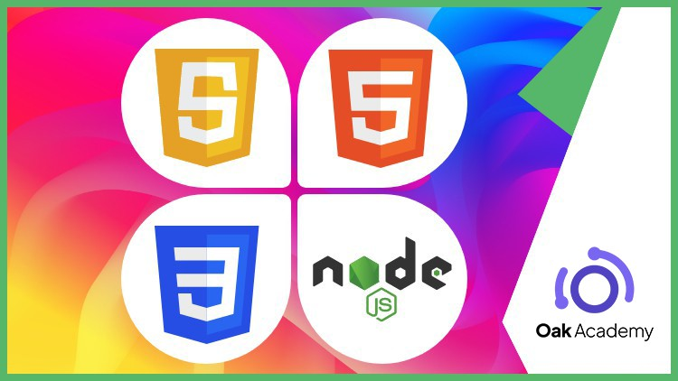

How to Build a Node.js Blog from Scratch
title: How to Build a Node.js Blog from Scratch date: 2024-06-21 author: Amin tags: [node.js, javascript, web development, blog, tutorial, backend] description: Learn how to create a complete blog application using Node.js, including markdown parsing, SEO optimization, and server-side rendering image: /images/nodejs-blog-tutorial.jpg category: Web Development slug: nodejs-blog-tutorial canonical: http://localhost:3000/blog/nodejs-blog-tutorial
How to Build a Node.js Blog from Scratch
In this comprehensive tutorial, you'll learn how to build a fully functional blog using Node.js...
Table of Contents
Setting up the project {#setting-up}
First, let's initialize our Node.js project...